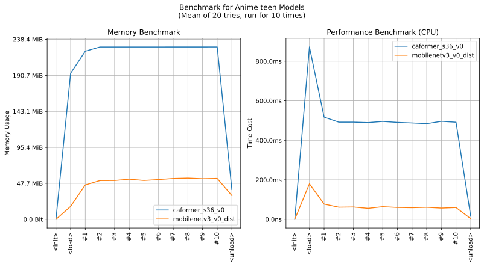

imgutils.validate.teen¶
- Overview:
A model for classifying teen anime images into 4 classes (
contentious,safe_teen,non_teen").The following are sample images for testing.

This is an overall benchmark of all the classification validation models:
The models are hosted on huggingface - deepghs/anime_teen.
anime_teen_score¶
-
imgutils.validate.teen.anime_teen_score(image: Union[str, os.PathLike, bytes, bytearray, BinaryIO, PIL.Image.Image], model_name: str = 'mobilenetv3_v0_dist') → Dict[str, float][source]¶ - Overview:
Predict the class of the given image, return the score with as a dict object.
- Parameters:
image – Image to teen.
model_name – Model to use. Default is
mobilenetv3_v0_dist. All available models are listed on the benchmark plot above. If you need better accuracy, just set this tocaformer_s36_v0.
- Returns:
A dict with classes and scores.
- Examples::
>>> from imgutils.validate import anime_teen_score >>> >>> anime_teen_score('teen/contentious/1.jpg') {'contentious': 0.9998493194580078, 'safe_teen': 3.0378791052498855e-05, 'non_teen': 0.00012023092131130397} >>> anime_teen_score('teen/contentious/2.jpg') {'contentious': 0.9790042638778687, 'safe_teen': 0.0017522255657240748, 'non_teen': 0.01924353837966919} >>> anime_teen_score('teen/contentious/3.jpg') {'contentious': 0.9998124241828918, 'safe_teen': 4.19778298237361e-05, 'non_teen': 0.0001456339523429051} >>> anime_teen_score('teen/safe_teen/4.jpg') {'contentious': 0.0008521362324245274, 'safe_teen': 0.9989691972732544, 'non_teen': 0.00017870066221803427} >>> anime_teen_score('teen/safe_teen/5.jpg') {'contentious': 6.0992944781901315e-05, 'safe_teen': 0.9994398951530457, 'non_teen': 0.0004991036257706583} >>> anime_teen_score('teen/safe_teen/6.jpg') {'contentious': 5.2035720727872103e-05, 'safe_teen': 0.9994019269943237, 'non_teen': 0.0005460577667690814} >>> anime_teen_score('teen/non_teen/7.jpg') {'contentious': 3.0478151529678144e-05, 'safe_teen': 3.524079147609882e-05, 'non_teen': 0.999934196472168} >>> anime_teen_score('teen/non_teen/8.jpg') {'contentious': 9.786742884898558e-05, 'safe_teen': 8.653994154883549e-05, 'non_teen': 0.9998156428337097} >>> anime_teen_score('teen/non_teen/9.jpg') {'contentious': 0.0001218809193233028, 'safe_teen': 0.00013706681784242392, 'non_teen': 0.9997410178184509}
anime_teen¶
-
imgutils.validate.teen.anime_teen(image: Union[str, os.PathLike, bytes, bytearray, BinaryIO, PIL.Image.Image], model_name: str = 'mobilenetv3_v0_dist') → Tuple[str, float][source]¶ - Overview:
Predict the class of the given image, return the class and its score.
- Parameters:
image – Image to teen.
model_name – Model to use. Default is
mobilenetv3_sce_dist. All available models are listed on the benchmark plot above. If you need better accuracy, just set this tocaformer_s36_plus.
- Returns:
A tuple contains the class and its score.
- Examples::
>>> from imgutils.validate import anime_teen >>> >>> anime_teen('teen/contentious/1.jpg') ('contentious', 0.9998493194580078) >>> anime_teen('teen/contentious/2.jpg') ('contentious', 0.9790042638778687) >>> anime_teen('teen/contentious/3.jpg') ('contentious', 0.9998124241828918) >>> anime_teen('teen/safe_teen/4.jpg') ('safe_teen', 0.9989691972732544) >>> anime_teen('teen/safe_teen/5.jpg') ('safe_teen', 0.9994398951530457) >>> anime_teen('teen/safe_teen/6.jpg') ('safe_teen', 0.9994019269943237) >>> anime_teen('teen/non_teen/7.jpg') ('non_teen', 0.999934196472168) >>> anime_teen('teen/non_teen/8.jpg') ('non_teen', 0.9998156428337097) >>> anime_teen('teen/non_teen/9.jpg') ('non_teen', 0.9997410178184509)